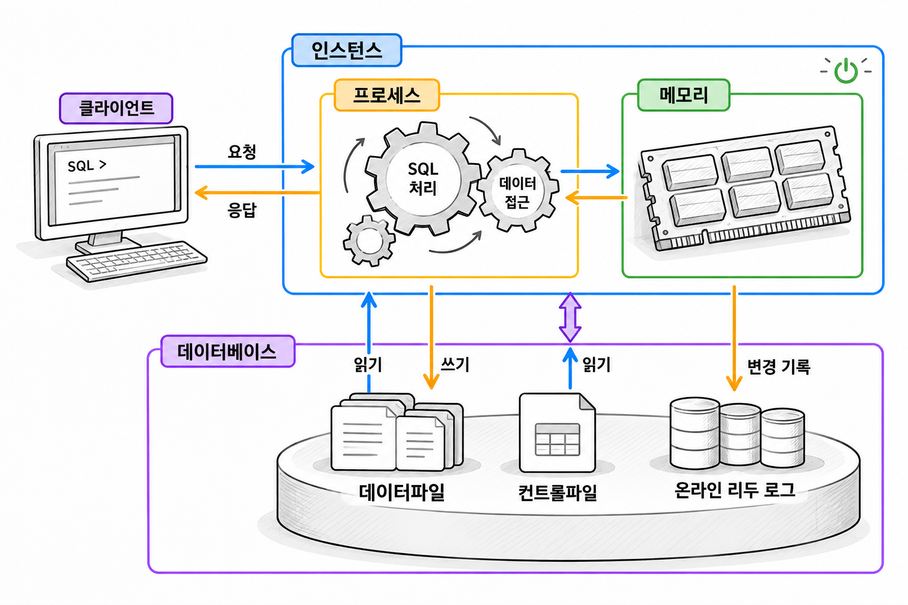
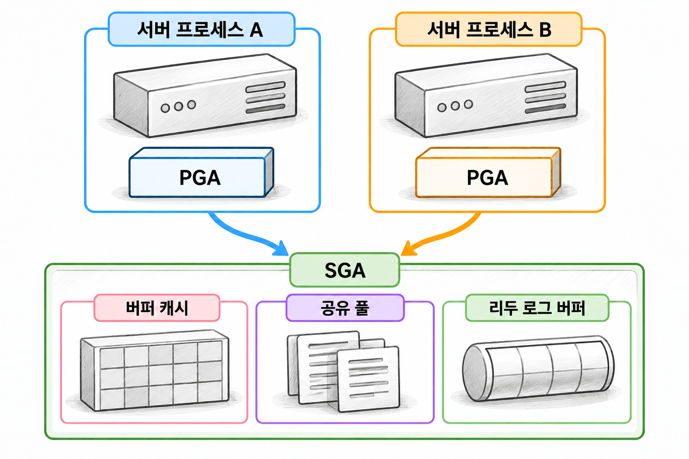
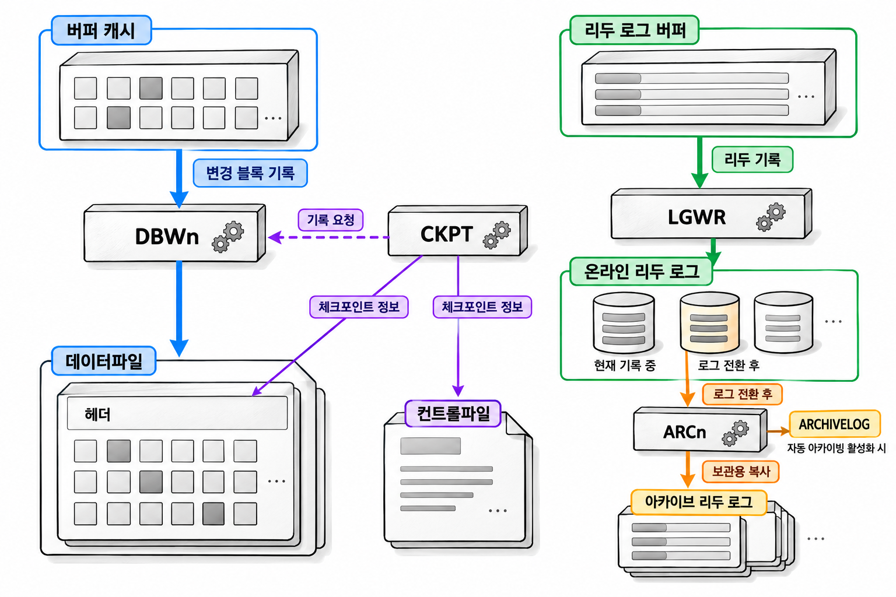

7장. Oracle 인스턴스와 데이터베이스란?
1. Oracle의 전체 구조
1.1 인스턴스와 데이터베이스의 구분
인스턴스(instance)는 데이터베이스를 운영하는 메모리 구조와 프로세스의 집합입니다. SQL을 실행하고, 데이터를 메모리에 보관하며, 변경 내용을 파일에 기록합니다.
물리적인 의미에서 데이터베이스는 데이터를 영구적으로 저장하는 파일의 집합입니다. 인스턴스가 종료되어도 파일은 남습니다. 다시 시작한 인스턴스는 남아 있는 파일을 이용해 데이터베이스를 운영합니다.
| 구분 | 인스턴스 | 데이터베이스 |
|---|---|---|
| 주요 구성 | 메모리 구조와 프로세스 | 영구 저장장치의 파일 |
| 주요 역할 | SQL 실행과 데이터 접근·변경 관리 | 데이터와 복구에 필요한 정보 보관 |
| 종료 후 상태 | 실행 중인 프로세스와 메모리 영역 해제 | 저장된 파일 유지 |
이 장은 데이터베이스 하나를 인스턴스 하나가 운영하는 단일 인스턴스 구성을 기준으로 설명합니다. 여러 인스턴스가 하나의 데이터베이스를 함께 운영하는 Oracle RAC 구성도 있습니다.

SQL Developer를 종료하는 것은 클라이언트를 종료하는 일입니다. 서버의 인스턴스를 종료하는 일과는 다릅니다. 다른 사용자는 계속 같은 서버에 접속하여 SQL을 실행할 수 있습니다.
1.2 CDB·PDB와 스키마의 관계
Oracle Database 21c는 멀티테넌트 컨테이너 데이터베이스(Container Database, CDB) 구조를 사용합니다. CDB에는 루트와 시드 PDB, 업무용 PDB가 들어갑니다.
플러거블 데이터베이스(Pluggable Database, PDB)는 업무 데이터와 객체를 담는 컨테이너입니다. 루트인 CDB$ROOT는 CDB를 관리하는 영역입니다. PDB$SEED는 새 PDB를 만들 때 사용하는 템플릿입니다.
| 구분 | 의미 | 실습에서의 위치 |
|---|---|---|
| CDB | 루트와 PDB를 포함하는 전체 데이터베이스 | 실습 서버가 운영하는 데이터베이스 |
| PDB | 업무 객체와 데이터를 담는 컨테이너 | 실습 계정이 접속하는 대상 |
| 스키마 | 한 사용자가 소유한 객체의 집합 | 실습 테이블과 인덱스의 소유 범위 |
PDB마다 인스턴스를 따로 시작하는 것은 아닙니다. 단일 인스턴스 구성에서는 한 인스턴스가 CDB와 그 안의 PDB를 운영합니다.
각 PDB에는 자체 데이터파일이 있습니다. 컨트롤파일과 온라인 리두 로그는 CDB 수준에서 관리합니다. PDB마다 별도의 컨트롤파일과 온라인 리두 로그를 두지는 않습니다.
스키마는 파일이나 메모리 영역을 뜻하지 않습니다. 예를 들어 실습 PDB의 LAB_USER가 만든 주문 테이블은 LAB_USER 스키마에 속합니다. 접속 서비스는 어느 PDB에 접근할지 정합니다. 사용자 계정은 그 안에서 사용할 권한과 객체 소유 범위를 정합니다.
1.3 클라이언트·리스너·서버 프로세스·세션
SQL Developer처럼 데이터베이스에 요청을 보내는 프로그램이 클라이언트(client)입니다. 서버에서는 서버 프로세스(server process)가 클라이언트의 SQL 실행 요청을 담당합니다.
리스너는 네트워크 접속 요청을 받습니다. 요청한 서비스에 맞게 서버 측 연결을 성립시킵니다. 일반적인 전용 서버 연결에서는 연결이 성립한 뒤 클라이언트와 서버 프로세스가 직접 통신합니다.
세션은 로그인한 사용자의 데이터베이스 작업 상태를 유지합니다. 사용자 정보, 세션 설정, SQL 실행 상태 등을 관리합니다. 네트워크 연결은 통신 경로이고, 세션은 데이터베이스 안에서 유지하는 작업 상태라는 차이가 있습니다.
| 구성 요소 | 담당하는 일 |
|---|---|
| 클라이언트 | SQL과 입력값을 보내고 결과를 표시 |
| 리스너 | 접속 요청을 받아 적절한 서비스로 연결 |
| 서버 프로세스 | SQL을 실행하고 데이터에 접근하여 결과 반환 |
| 세션 | 로그인 사용자와 작업 상태 유지 |
전용 서버(dedicated server) 방식에서는 연결마다 전담 서버 프로세스가 요청을 처리합니다. 공유 서버(shared server) 방식에서는 여러 연결의 요청을 서버 프로세스들이 나누어 처리합니다. 이 장의 기본 설명은 전용 서버 방식을 기준으로 합니다.
2. 메모리 구조
2.1 SGA와 PGA
시스템 글로벌 영역(System Global Area, SGA)은 인스턴스의 여러 프로세스가 함께 사용하는 메모리입니다. 읽어 온 데이터 블록이나 SQL 실행에 재사용할 정보를 보관합니다.
프로그램 글로벌 영역(Program Global Area, PGA)은 Oracle 프로세스가 개별적으로 사용하는 메모리입니다. 서버 프로세스뿐 아니라 백그라운드 프로세스도 각자의 PGA를 갖습니다.
| 구분 | SGA | PGA |
|---|---|---|
| 사용 범위 | 인스턴스의 여러 프로세스가 공유 | 각 프로세스가 개별 사용 |
| 대표 내용 | 데이터 블록, 공유 SQL 정보, 리두 정보 | SQL 실행 상태, 정렬·해시 작업 영역 |
| 다른 프로세스와의 관계 | 같은 영역에 접근 | 다른 프로세스의 PGA와 분리 |
세션에 속한 정보와 프로세스에 속한 메모리를 항상 같은 것으로 보면 안 됩니다. 세션 상태를 보관하는 사용자 글로벌 영역(User Global Area, UGA)은 전용 서버 방식에서 PGA에 위치합니다. 공유 서버 방식에서는 여러 서버 프로세스가 접근할 수 있도록 SGA에 위치합니다.
2.2 버퍼 캐시·공유 풀·리두 로그 버퍼
SGA에는 목적이 다른 여러 영역이 있습니다. 그중 버퍼 캐시, 공유 풀, 리두 로그 버퍼는 데이터 접근과 SQL 실행을 이해하는 데 필요한 영역입니다.
| 영역 | 보관하는 내용 | 사용하는 목적 |
|---|---|---|
| 버퍼 캐시(buffer cache) | 데이터파일에서 읽은 블록과 변경한 블록 | 메모리에서 블록에 접근 |
| 공유 풀(shared pool) | 공유 SQL 정보, 실행 계획, 데이터 사전 정보 등 | SQL 처리에 필요한 정보 재사용 |
| 리두 로그 버퍼(redo log buffer) | 데이터 변경을 재현하는 리두 정보 | 온라인 리두 로그에 기록하기 전 임시 보관 |
일반적인 버퍼 캐시 경로에서는 필요한 블록이 메모리에 있으면 그 블록을 사용합니다. 없으면 데이터파일에서 읽어 옵니다. 행 하나를 찾더라도 저장장치에서는 그 행이 들어 있는 블록을 읽습니다.
공유 풀에 보관하는 실행 계획(execution plan)은 SQL을 어떤 방법으로 실행할지 정한 절차입니다. 실행 계획을 재사용하는 것과 조회 결과를 재사용하는 것은 서로 다릅니다.
리두 로그 버퍼에는 변경된 테이블 전체가 들어가지 않습니다. 변경을 재현하는 데 필요한 리두(redo) 정보가 들어갑니다. 버퍼는 메모리이므로 리두 정보를 영구적으로 보관하려면 파일에 기록해야 합니다.

2.3 정렬·해시 작업과 메모리 사용
많은 행을 정렬하거나 해시 방식으로 조인할 때는 중간 데이터를 담을 공간이 필요합니다. SQL 실행 중 이런 연산에 사용하는 PGA 메모리를 작업 영역(work area)이라고 합니다.
정렬 작업은 행을 정렬할 공간을 사용합니다. 해시 조인은 조인할 데이터를 찾기 위한 해시 테이블을 만듭니다. 필요한 데이터와 보조 구조가 작업 영역에 모두 들어가면 메모리에서 연산을 마칠 수 있습니다.
공간이 부족하면 일부 데이터를 임시 저장공간에 기록합니다. 이후 다시 읽어 처리하므로 저장장치 접근이 추가됩니다.
| 작업 조건 | 메모리와 저장장치 사용 |
|---|---|
| 작업 영역에 필요한 데이터가 들어감 | 메모리에서 연산 가능 |
| 작업 영역에 데이터가 들어가지 않음 | 임시 저장공간에 일부 기록 후 다시 읽음 |
| 큰 작업이 동시에 많이 실행됨 | 여러 작업의 메모리 요구가 함께 증가 |
자동 PGA 관리에서는 Oracle이 작업 영역 크기를 조정합니다. 다만 PGA_AGGREGATE_TARGET은 인스턴스 전체 PGA의 목표값입니다. 개별 SQL에 그 크기만큼 메모리를 보장하는 설정은 아닙니다.
정렬이 느리다는 이유만으로 메모리부터 늘리지는 않습니다. 정렬할 행 수와 행의 크기, 동시에 실행되는 작업도 메모리 요구량을 좌우합니다. 필요한 데이터만 연산에 전달하는 것이 메모리 사용을 줄이는 출발점입니다.
3. 백그라운드 프로세스와 파일
3.1 DBWn·LGWR·CKPT의 역할
백그라운드 프로세스(background process)는 파일 기록과 자원 정리처럼 데이터베이스 운영에 필요한 작업을 맡습니다. 사용자가 보낸 SQL을 담당하는 서버 프로세스와 역할을 나눕니다.
DBWn, LGWR, CKPT는 메모리의 변경 내용을 파일에 반영하는 과정에서 서로 다른 일을 합니다.
| 프로세스 | 주요 역할 |
|---|---|
DBWn | 버퍼 캐시의 변경된 블록을 데이터파일에 기록 |
LGWR | 리두 로그 버퍼의 정보를 온라인 리두 로그에 기록 |
CKPT | 체크포인트 정보를 기록하고 DBWn에 블록 기록 요청 |
DBWn의 n은 여러 데이터베이스 기록 프로세스를 구별하는 자리입니다. 실제 이름은 DBW0처럼 표시됩니다.
메모리에서 변경한 뒤 데이터파일에 아직 기록하지 않은 버퍼를 더티 버퍼(dirty buffer)라고 합니다. DBWn은 사용 가능한 버퍼를 확보하거나 체크포인트를 처리할 때 더티 버퍼를 기록합니다.
LGWR는 커밋할 때뿐 아니라 운영 중 필요한 시점에도 리두를 기록합니다. 일반적인 동기식 커밋에서는 필요한 리두가 파일에 기록될 때까지 기다립니다. 이때 DBWn이 변경 블록을 모두 기록할 때까지 기다리는 것은 아닙니다.
체크포인트(checkpoint)는 장애 복구의 기준이 되는 진행 정보를 관리하는 장치입니다. CKPT는 체크포인트 정보를 컨트롤파일과 데이터파일 헤더에 기록합니다. 데이터 블록 자체의 기록은 DBWn이 담당합니다.
3.2 SMON·PMON·ARCn의 역할
SMON, PMON, ARCn은 복구, 비정상 종료 감지, 로그 보관을 나누어 담당합니다.
| 프로세스 | 주요 역할 | 대표 상황 |
|---|---|---|
SMON | 인스턴스 복구와 시스템 수준 정리 | 비정상 종료 후 인스턴스 시작 |
PMON | 프로세스 비정상 종료 감지와 정리 작업 연계 | 서버 프로세스가 비정상 종료 |
ARCn | 온라인 리두 로그를 아카이브 저장소로 복사 | 로그 전환 후 로그 보관 |
인스턴스 복구(instance recovery)는 비정상 종료로 파일에 반영하지 못한 변경 등을 정리하는 과정입니다. 이 과정을 거쳐 데이터베이스가 일관된 상태를 회복합니다. SMON은 시작 시 필요한 인스턴스 복구를 담당합니다.
Oracle 21c에서 PMON이 모든 정리 작업을 혼자 실행하지는 않습니다. PMON은 종료를 감지하고, CLMN과 CLnn이 자원 정리를 나누어 맡습니다. 인스턴스 정보를 리스너에 등록하는 일은 LREG가 담당합니다.
아카이브 리두 로그(archived redo log)는 보관용으로 복사한 온라인 리두 로그입니다. ARCn은 ARCHIVELOG 모드에서 자동 아카이빙이 활성화된 경우 동작합니다. 아카이브가 필요한 로그를 보관하지 못하면 해당 온라인 리두 로그를 재사용할 수 없습니다. 이 때문에 처리가 대기할 수 있습니다.
3.3 데이터파일·컨트롤파일·온라인 리두 로그
메모리와 프로세스의 역할은 어떤 파일을 사용하는지 함께 보면 구분하기 쉽습니다.
| 파일 | 보관하는 정보 | 관련 프로세스 |
|---|---|---|
| 데이터파일(data file) | 테이블·인덱스 등의 데이터 | 서버 프로세스가 읽고 DBWn이 변경 블록 기록 |
| 컨트롤파일(control file) | 데이터파일·로그 파일 구성과 체크포인트 정보 등 | CKPT 등이 관련 정보 갱신 |
| 온라인 리두 로그(online redo log) | 데이터파일 변경을 재현하는 리두 기록 | LGWR가 기록 |
| 아카이브 리두 로그 | 보관을 위해 복사한 리두 로그 | ARCn이 생성 |
컨트롤파일은 데이터베이스의 물리적 구성과 상태를 관리하는 이진 파일입니다. 테이블의 업무 데이터를 담는 파일과 역할이 다릅니다.
온라인 리두 로그는 그룹 단위로 순환하여 사용합니다. 현재 그룹을 채우거나 로그 전환을 요청하면 다음 그룹으로 넘어갑니다. 한 그룹에는 같은 내용을 기록하는 여러 멤버 파일을 둘 수도 있습니다.

정렬·해시 작업의 임시 저장공간에는 임시파일(temp file)을 사용합니다. 업무 데이터를 영구적으로 보관하는 데이터파일과 용도가 다릅니다.
예를 들어 주문 금액을 변경하면 변경 블록은 버퍼 캐시에 놓입니다. 변경을 재현할 정보는 리두 로그 버퍼에 놓입니다. DBWn과 LGWR는 각자의 경로로 파일에 기록합니다. 따라서 데이터파일에 변경 블록이 기록되었는지와 사용자가 커밋했는지는 별개로 판단해야 합니다.